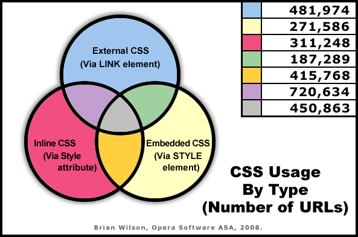

MAMA: CSS report
Introduction
Cascading Style Sheets (CSS) is one of the biggest success stories of the Web. It was first specified by the W3C in 1995, and was quickly embraced by browsers and authors. CSS offers much richer typographical control than the HTML-based solutions that were the norm before it came into being. Over a decade after the first documents started using CSS, the Web has clearly embraced it—it was detected in 2,821,141 of MAMA's URLs (80.4%). For a deeper look at the details of MAMA's CSS examination, the following MAMA article topics are also available this week:
CSS inclusion methods used in Web pages
CSS tracking in MAMA was accomplished via the following 3 sources:
- External CSS via the
LINKelement - Embedded CSS by way of
STYLEelement content Styleattribute content
The Style attribute was the most common method encountered,
just barely exceeding the total for the external CSS construct
(LINK element). The "times per page" values and other
counters represent the number of occurrences for the specific syntax that is
encountered for a URL. For example, the maximum number of
LINKed style sheets discovered in any single page was
44; the maximum number of Style attributes found was
21,293. The average "per-page" numbers listed in the table below
apply where that type of CSS was used and does not cover the total MAMA URL
space.
| CSS type | Description | Total URLs containing CSS type | % Total CSS usage |
Most popular quantity |
Max. quantity per page | Avg. quantity per page |
|---|---|---|---|---|---|---|
| Style attribute | Contents of all Style attributes | 1,898,513 | 67.3% | 1 | 21,293 | 25.6 |
| External CSS | Content from all LINK/Href/Rel="Stylesheet" URLs | 1,836,260 | 65.1% | 1 | 44 | 1.5 |
| Embedded CSS | Contents of all STYLE elements | 1,321,006 | 46.8% | 1 | 708 | 1.6 |
CSS usage source diagram
The most popular combination of CSS methods is external CSS (the LINK
element) in conjunction with inline CSS (the Style
attribute). The least popular mixing is external CSS paired with embedded CSS (the
STYLE element). To get a clearer view of the uses and
intersections of the different CSS methods, the following diagram is helpful:

Note: Region sizes are not to scale.
CSS properties
The most popular CSS properties are the replacements for standard "old school"
HTML presentational markup. The top 3 properties replicate the functionality
of the FONT element, and the next 2 in popularity take over
from the U, S, STRIKE
and B elements. For CSS Box Model properties
('border', 'margin', and
'padding'), the shorthand versions are more popular
than their separate component forms, but the reverse is true for the 'font'
and 'background' properties. The most popular component properties for the CSS Box Model are the
top side for 'margin', and the bottom side for
'border'/'padding'.
| CSS property | Frequency | % Total CSS usage |
CSS property | Frequency | % Total CSS usage | |
|---|---|---|---|---|---|---|
color | 2,400,643 | 85.1% | margin | 1,317,016 | 46.7% | |
font-size | 2,336,689 | 82.8% | padding | 1,276,661 | 45.3% | |
font-family | 2,223,829 | 78.8% | margin-top | 1,241,997 | 44.0% | |
text-decoration | 2,113,412 | 74.9% | line-height | 1,179,743 | 41.8% | |
font-weight | 2,012,992 | 71.4% | margin-bottom | 1,173,093 | 41.6% | |
background-color | 1,698,366 | 60.2% | margin-left | 1,125,675 | 39.9% | |
width | 1,596,974 | 56.6% | position | 1,095,461 | 38.8% | |
text-align | 1,448,336 | 51.3% | padding-left | 989,492 | 35.1% | |
height | 1,428,991 | 50.7% | background | 958,127 | 34.0% | |
border | 1,376,821 | 48.8% | display | 954,047 | 33.8% |
Special CSS features: inherit and !important
Two keywords in CSS have special meaning—they are not selectors and they are
not properties. The "inherit" keyword is a special
global property value used to explicitly pass on a particular value from a parent
to a child. Just under 10% of all URLs using CSS (278,743 URLs) use this keyword
at least once. The other special keyword is "!important",
which specifies a shift in the bias of a document's cascade order toward a specific
CSS rule. It was found in 155,449 of MAMA's URLs (over 5% of all cases using CSS).
These numbers seem significant, but if one frames the numbers in perspective with
the CSS property frequency table, optimism is quickly deflated. For instance,
there are almost 75 CSS properties that are more popular than the "!important"
keyword, including the non-standard 'filter' and
most of the scrollbar properties.
At-rules
MAMA tracked 3 types of CSS at-rule syntax: @import,
@media, and @charset.
For @charset, only the existence of the at-rule
is tracked. In the case of @media, the existence
is tracked, along with the stated media type values. Lastly, @import
statements were dissected and analyzed for their file names and media types.
| At-rule type | Frequency | % Total CSS usage |
|---|---|---|
@import | 191,496 | 6.79% |
@media | 63,293 | 2.24% |
@charset | 30,022 | 1.06% |
Media types
There were 404,212 pages that specified at least one CSS media type. Media types
were detected by looking at the Media attribute of
all LINK and STYLE elements,
as well as the CSS @media at-rule syntax. The
resulting list of media types were then matched against the following regular
expression:
Regexp:
/(all|screen|print|speech|aural|handheld|projection|tv)/i
Any media type that was not recognized fell into a catch-all category termed "other". What were some of the "other" media types? The 3 main types that were noticeable in significant quantities are all from CSS2: "braille", "embossed", and "tty".
| Media type | Frequency | % Total media usage |
Media type | Frequency | % Total media usage | |
|---|---|---|---|---|---|---|
| screen | 252,948 | 62.6% | other | 7,119 | 1.8% | |
| 171,328 | 42.4% | tv | 5,770 | 1.4% | ||
| all | 130,227 | 32.2% | aural | 2,533 | 0.6% | |
| projection | 31,651 | 7.8% | speech | 301 | 0.1% | |
| handheld | 22,316 | 5.5% |
Pseudo-classes and pseudo-elements
There are a number of these constructs defined in CSS2, and many more are listed
in CSS3. Only a subset of pseudo-classes and pseudo-elements were chosen for tracking
in MAMA for this report. Some obvious/important pseudo-classes were ignored this time,
specifically ":active", ":link" ,
and ":visited".
The pseudo-class :hover is used in two-thirds of all pages that use CSS.
The pseudo-element :after is (strangely) 3 times more popular than
:before. The psuedo-class :first-child
is more than 4 times as frequent as :last-child
(although that can probably be attributed to :first-child
being in CSS2, while :last-child was not added until
CSS3). The typography distinctions that are :first-letter
and :first-line are not that widely used, although
authors preferred to control the initial letter of a block more often than the
initial line (by more than a 3:1 ratio).
| Pseudo-class/element | Frequency | % Total CSS usage |
Pseudo-class/element | Frequency | % Total CSS usage | |
|---|---|---|---|---|---|---|
hover | 1,918,442 | 68.0% | first-letter | 15,804 | 0.6% | |
after | 96,541 | 3.4% | last-child | 5,826 | 0.2% | |
focus | 94,953 | 3.4% | first-line | 4,476 | 0.2% | |
before | 34,558 | 1.2% | not | 2,785 | 0.1% | |
first-child | 24,769 | 0.9% | lang | 2,546 | 0.1% |
Conclusion
Although this overview covers many interesting points of MAMA's CSS examination,
the reader is encouraged to also dig deeper into the main MAMA articles on CSS
(see the links at the beginning of this document). These documents add more detail
to the topics already mentioned and discuss additional interesting topics such
as MIME types and file names for external CSS, detailed usage of
@import, and CSS browser vendor extensions.
Stay tuned for next week's topics, when we will start looking at what MAMA discovered about script usage.
This article is licensed under a Creative Commons Attribution, Non Commercial - Share Alike 2.5 license.
Comments
The forum archive of this article is still available on My Opera.
No new comments accepted.